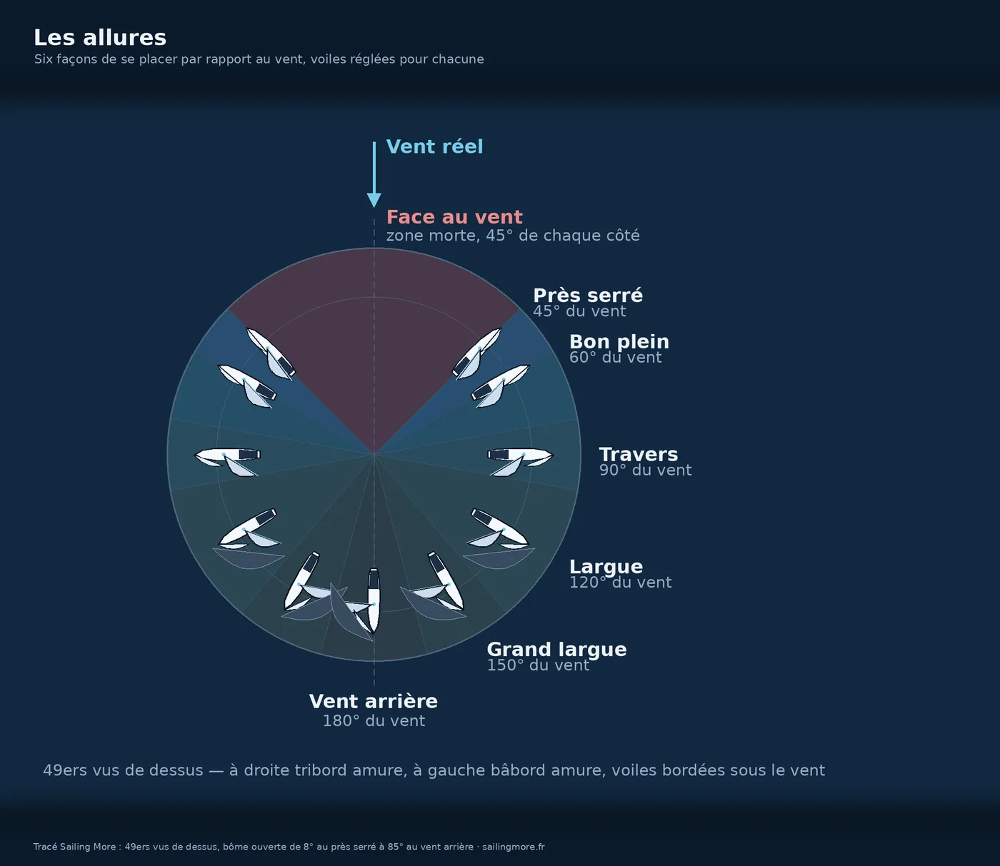
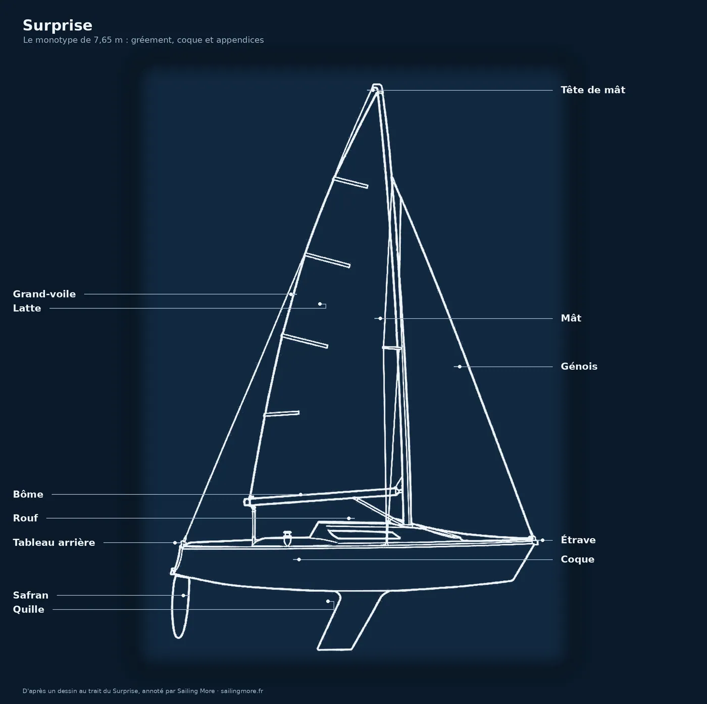
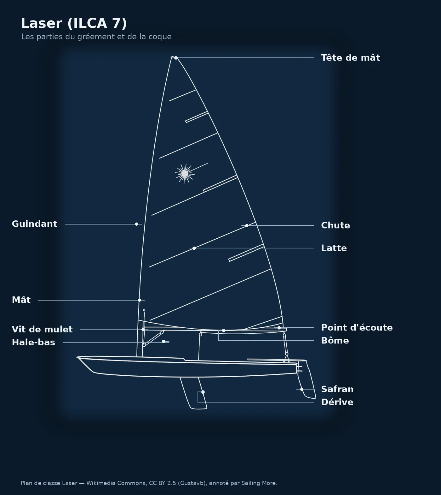
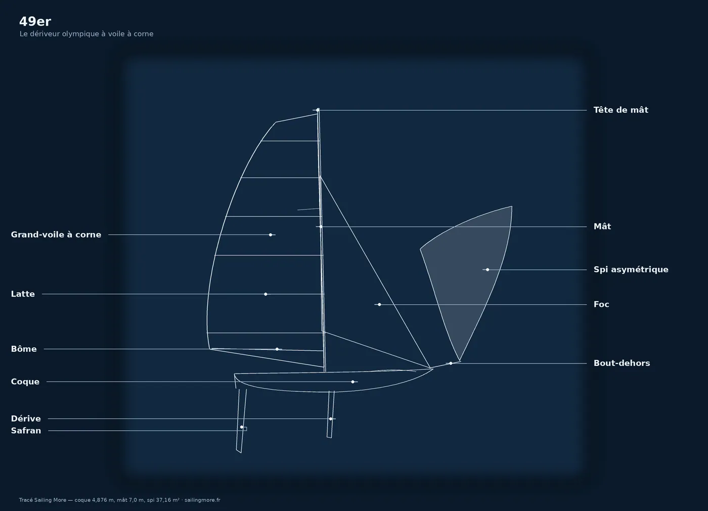
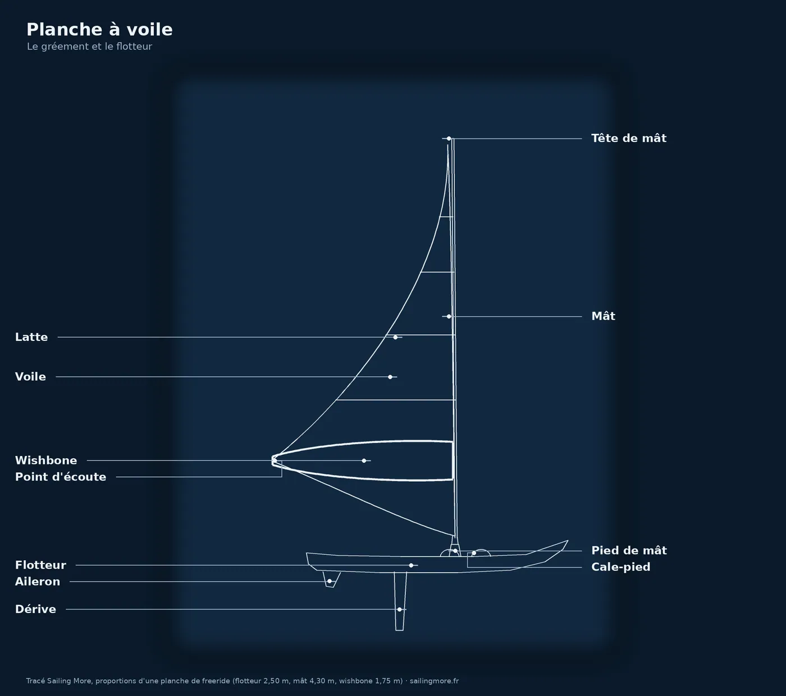

Cours théoriques de voile
Un cours complet et gratuit, du vocabulaire du bateau jusqu'aux notions de base du permis côtier, en 18 chapitres. Chaque chapitre ne suppose que les précédents : lisez-les dans l'ordre. Chaque règle est citée par son numéro et son intitulé exacts, avec ce qu'elle oblige ; chaque chapitre se termine par un exercice corrigé, et le cours par quatre questions de révision. Aucune inscription n'est demandée.
Choisir un cours
Commencer la voile
De zéro à la première sortie.
Permis et diplôme
Ce qui est interrogé à l'examen.
Perfectionnement
Une fois qu'on sait déjà naviguer.
Régate
Se mesurer, en respectant les règles.
Les schémas des bateaux
Dix planches annotées, déjà dessinées pour le cours. Touchez-en une : elle s'ouvre, une seule à la fois.
Les alluresSix allures, et la zone morte

SurpriseHabitable · 7,65 m

X-35Habitable · 10,6 m

Hobie 16Multicoque · 5,05 m

LaserDériveur · 4,2 m

49erSkiff · 4,99 m

iQFOiLPlanche · 2,2 m

Formula KiteKite

WingfoilWing

La portance d'un foilCoupe d'une aile : incidence et pressions

Sources : Racing Rules of Sailing 2025-2028 (World Sailing, sailing.org) ; COLREG 1972 (OMI), appliqué en France sous le nom de RIPAM, dont les intitulés sont ceux du texte anglais officiel ; balisage AISM/IALA, région A. Ces résumés ne remplacent pas les textes, qui font foi ; les cas particuliers ne sont pas traités, et le cours ne remplace ni une formation pratique ni l'examen.